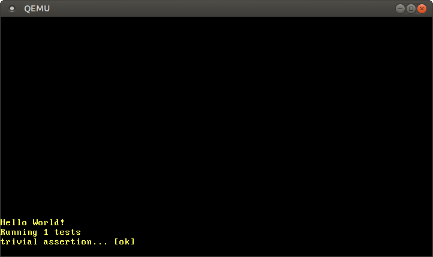
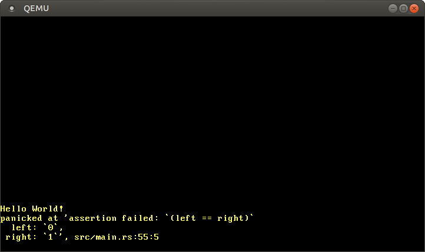

テスト
この記事は翻訳されたものです： この記事はTestingをコミュニティの手により翻訳したものです。そのため、翻訳が完全・最新でなかったり、原文にない誤りを含んでいる可能性があります。問題があればこのissue上で報告してください！
翻訳者： @woodyZootopia 及び @JohnTitor.
この記事では、no_stdな実行環境における単体テストと結合テストについて学びます。Rustではカスタムテストフレームワークがサポートされているので、これを使ってカーネルの中でテスト関数を実行します。QEMUの外へとテストの結果を通知するため、QEMUとbootimageの様々な機能を使います。
このブログの内容は GitHub 上で公開・開発されています。何か問題や質問などがあれば issue をたててください (訳注: リンクは原文(英語)のものになります)。またこちらにコメントを残すこともできます。この記事の完全なソースコードはpost-04 ブランチにあります。
目次
🔗この記事を読む前に
この記事は、（古い版の）単体テストと結合テストの記事を置き換えるものです。この記事は、あなたが最小のカーネルの記事を2019-04-27以降に読んだことを前提にしています。主に、あなたの.cargo/config.tomlファイルが標準のターゲットを設定しており、ランナー実行ファイルを定義していることが条件となります。
訳注: 最小のカーネルの記事が日本語に翻訳されたのはこの日より後なので、あなたがこのサイトを日本語で閲覧している場合は特に問題はありません。
🔗Rustにおけるテスト
Rustにはテストフレームワークが組み込まれており、特別な設定なしに単体テストを走らせることができます。何らかの結果をアサーションを使って確認する関数を作り、その関数のヘッダに#[test]属性をつけるだけです。その上でcargo testを実行すると、あなたのクレートのすべてのテスト関数を自動で見つけて実行してくれます。
残念なことに、私達のカーネルのようなno_stdのアプリケーションにとっては、テストは少しややこしくなります。問題なのは、Rustのテストフレームワークは組み込みのtestライブラリを内部で使っており、これは標準ライブラリに依存しているということです。つまり、私達の#[no_std]のカーネルには標準のテストフレームワークは使えないのです。
私達のプロジェクト内でcargo testを実行しようとすればそれがわかります：
> cargo test
Compiling blog_os v0.1.0 (/…/blog_os)
error[E0463]: can't find crate for `test`
testクレートは標準ライブラリに依存しているので、私達のベアメタルのターゲットでは使えません。testクレートを#[no_std]環境に持ってくるということは不可能ではないのですが、非常に不安定であり、またpanicマクロの再定義といった技巧が必要になってしまいます。
🔗独自のテストフレームワーク
ありがたいことに、Rustでは、不安定なcustom_test_frameworks機能を使えば標準のテストフレームワークを置き換えることができます。この機能には外部ライブラリは必要なく、したがって#[no_std]環境でも動きます。これは、#[test_case]属性をつけられたすべての関数のリストを引数としてユーザの指定した実行関数を呼び出すことで働きます。こうすることで、（実行関数の）実装内容によってテストプロセスを最大限コントロールできるようにしているのです。
標準のテストフレームワークと比べた欠点は、should_panicテストのような多くの高度な機能が利用できないということです。それらの機能が必要なら、自分で実装して提供してください、というわけです。これは私達にとって全く申し分のないことで、というのも、私達の非常に特殊な実行環境では、それらの高度な機能の標準の実装はいずれにせようまく働かないだろうからです。例えば、#[should_panic]属性はパニックを検知するためにスタックアンワインドを使いますが、これは私達のカーネルでは無効化しています。
私達のカーネルのための独自テストフレームワークを実装するため、以下をmain.rsに追記します：
// in src/main.rs
#![feature(custom_test_frameworks)]
#![test_runner(crate::test_runner)]
#[cfg(test)]
fn test_runner(tests: &[&dyn Fn()]) {
println!("Running {} tests", tests.len());
for test in tests {
test();
}
}
このランナーは短いデバッグメッセージを表示し、リスト内のそれぞれの関数を呼び出すだけです。引数の型である&[&dyn Fn()]は、Fn()トレイトのトレイトオブジェクト参照のスライスです。これは要するに、関数のように呼び出せる型への参照のリストです。この (test_runner) 関数はテストでない実行のときには意味がないので、#[cfg(test)]属性を使って、テスト時にのみこれがインクルードされるようにします。
cargo testを実行すると、今度は成功しているはずです（もし失敗したなら、下の補足を読んでください）。しかし、依然として、test_runnerからのメッセージではなく “Hello World” が表示されてしまっています。この理由は、_start関数がまだエントリポイントとして使われているからです。「独自のテストフレームワーク」機能はtest_runnerを呼び出すmain関数を生成するのですが、私達は#[no_main]属性を使っており、独自のエントリポイントを与えてしまっているため、このmain関数は無視されてしまうのです。
補足: 現在、cargoにはcargo testを実行すると、いくらかのケースにおいて “duplicate lang item” エラーになってしまうバグが存在します。これは、Cargo.toml内のプロファイルにおいてpanic = "abort"を設定していたときに起こります。これを取り除けばcargo testはうまくいくはずです。これについて、より詳しく知りたい場合はcargoのissueを読んでください。
これを修正するために、まず生成される関数の名前をreexport_test_harness_main属性を使ってmainとは違うものに変える必要があります。そして、その改名された関数を_start関数から呼び出せばよいです。
// in src/main.rs
#![reexport_test_harness_main = "test_main"]
#[no_mangle]
pub extern "C" fn _start() -> ! {
println!("Hello World{}", "!");
#[cfg(test)]
test_main();
loop {}
}
テストフレームワークのエントリ関数の名前をtest_mainに設定し、私達の_startエントリポイントから呼び出しています。test_main関数は通常の実行時には生成されていないので、条件付きコンパイルを用いて、テスト時にのみこの関数への呼び出しが追記されるようにしています。
cargo testを実行すると、 test_runnerからの “Running 0 tests” というメッセージが画面に表示されます。これで、テスト関数を作り始める準備ができました：
// in src/main.rs
#[test_case]
fn trivial_assertion() {
print!("trivial assertion... "); // "些末なアサーション……"
assert_eq!(1, 1);
println!("[ok]");
}
cargo testを実行すると、以下の出力を得ます：

今、test_runner関数に渡されるtestのスライスは、trivial_assertion関数への参照を保持しています。trivial assertion... [ok]という画面の出力から、テストが呼び出され成功したことがわかります。
テストを実行したあとは、test_runnerからtest_main関数へとリターンし、さらに_startエントリポイント関数へとリターンします。エントリポイント関数がリターンすることは認められていないので、_startの最後では無限ループに入ります。しかし、cargo testにはすべてのテストを実行し終わった後に終了してほしいので、これは問題です。
🔗QEMUを終了する
今の所、_start関数の最後で無限ループがあるので、cargo testを実行するたびにQEMUを手動で終了しないといけません。ユーザによる入力などのないスクリプトでもcargo testを実行したいので、これは不都合です。これに対する綺麗な解決法はOSをシャットダウンする適切な方法を実装することでしょう。これはAPMかACPIというパワーマネジメント標準規格へのサポートを実装する必要があるので、残念なことに比較的複雑です。
しかし嬉しいことに、ある「脱出口」があるのです。QEMUは特殊なisa-debug-exitデバイスをサポートしており、これを使うとゲストシステムから簡単にQEMUを終了できます。これを有効化するためには、QEMUに-device引数を渡す必要があります。これはCargo.tomlにpackage.metadata.bootimage.test-args設定キーを追加することで行えます。
# in Cargo.toml
[package.metadata.bootimage]
test-args = ["-device", "isa-debug-exit,iobase=0xf4,iosize=0x04"]
bootimage runnerは、test-argsをすべてのテスト実行可能ファイルの標準QEMUコマンドに追加します。通常のcargo runのとき、これらの引数は無視されます。
デバイス名 (isa-debug-exit) に加え、カーネルからそのデバイスにたどり着くための I/Oポート を指定するiobaseとiosizeという2つのパラメータを渡しています。
🔗I/Oポート
CPUと周辺機器が通信するやり方には、 memory-mapped I/O と port-mapped I/O の2つがあります。memory-mapped I/Oについては、すでにVGAテキストバッファにメモリアドレス0xb8000を使ってアクセスしたときに使っています。このアドレスはRAMではなく、VGAデバイス上にあるメモリにマップされているのです。
一方、port-mapped I/Oは通信に別個のI/Oバスを使います。接続されたそれぞれの周辺機器は1つ以上のポート番号を持っています。それらのI/Oポートと通信するために、inとoutという特別なCPU命令があり、これらはポート番号と1バイトのデータを受け取ります（u16やu32を送信できる、これらの亜種も存在します）。
isa-debug-exitはこのport-mapped I/Oを使います。iobaseパラメータはどのポートにこのデバイスが繋がれているのか（0xf4はx86のI/Oバスにおいて普通使われないポートです）を、iosizeはポートの大きさ（0x04は4バイトを意味します）を指定します。
🔗「終了デバイス」を使う
isa-debug-exitの機能は非常に単純です。値valueがiobaseにより指定されたI/Oポートに書き込まれたら、QEMUは終了ステータスを(value << 1) | 1にして終了します。なので、このポートに0を書き込むと、QEMUは終了ステータス(0 << 1) | 1 = 1で、1を書き込むと終了ステータス(1 << 1) | 1 = 3で終了します。
inとoutのアセンブリ命令を手動で呼び出す代わりに、x86_64クレートによって提供されるabstractionを使います。このクレートへの依存を追加するため、Cargo.tomlのdependenciesセクションにこれを追加しましょう：
# in Cargo.toml
[dependencies]
x86_64 = "0.14.2"
これで、このクレートによって提供されるPort型を使ってexit_qemu関数を作ることができます。
// in src/main.rs
#[derive(Debug, Clone, Copy, PartialEq, Eq)]
#[repr(u32)]
pub enum QemuExitCode {
Success = 0x10,
Failed = 0x11,
}
pub fn exit_qemu(exit_code: QemuExitCode) {
use x86_64::instructions::port::Port;
unsafe {
let mut port = Port::new(0xf4);
port.write(exit_code as u32);
}
}
この関数は新しいPortを0xf4（isa-debug-exitデバイスのiobaseです）に作ります。そして、渡された終了コードをポートに書き込みます。isa-device-exitデバイスのiosizeに4バイトを指定していたので、u32を使うことにします。I/Oポートへの書き込みは一般にあらゆる振る舞いを引き起こしうるので、これらの命令は両方unsafeです。
終了ステータスを指定するために、QemuExitCodeenumを作ります。成功したら成功（Success）の終了コードで、そうでなければ失敗（Failed）の終了コードで終了しようというわけです。enumは#[repr(u32)]をつけることで、それぞれのヴァリアントがu32の整数として表されるようにしています。終了コード0x10を成功に、0x11を失敗に使います。終了コードの実際の値は、QEMUの標準の終了コードと被ってしまわない限りはなんでも構いません。例えば、成功の終了コードに0を使うと、変換後(0 << 1) | 1 = 1になってしまい、これはQEMUが実行に失敗したときの標準終了コードなのでよくありません。QEMUのエラーとテスト実行の成功が区別できなくなります。
というわけで、test_runnerを更新して、すべてのテストが実行されたあとでQEMUを終了するようにできますね：
fn test_runner(tests: &[&dyn Fn()]) {
println!("Running {} tests", tests.len());
for test in tests {
test();
}
/// new
exit_qemu(QemuExitCode::Success);
}
cargo testを実行すると、QEMUはテスト実行後即座に閉じるのがわかります。しかし、問題は、Successの終了コードを渡したのに、cargo testはテストが失敗したと解釈することです：
> cargo test
Finished dev [unoptimized + debuginfo] target(s) in 0.03s
Running target/x86_64-blog_os/debug/deps/blog_os-5804fc7d2dd4c9be
Building bootloader
Compiling bootloader v0.5.3 (/home/philipp/Documents/bootloader)
Finished release [optimized + debuginfo] target(s) in 1.07s
Running: `qemu-system-x86_64 -drive format=raw,file=/…/target/x86_64-blog_os/debug/
deps/bootimage-blog_os-5804fc7d2dd4c9be.bin -device isa-debug-exit,iobase=0xf4,
iosize=0x04`
error: test failed, to rerun pass '--bin blog_os'
問題は、cargo testが0でないすべてのエラーコードを失敗と解釈してしまうことです。
🔗成功の終了コード
これを解決するために、bootimageは指定された終了コードを0へとマップする設定キー、test-success-exit-codeを提供しています：
[package.metadata.bootimage]
test-args = […]
test-success-exit-code = 33 # (0x10 << 1) | 1
この設定を使うと、bootimageは私達の出した成功の終了コードを、終了コード0へとマップするので、cargo testは正しく成功を認識し、テストを失敗したと見做さなくなります。
これで私達のテストランナーは、自動でQEMUを閉じ、結果を報告するようになりました。しかし、QEMUの画面が非常に短い時間開くのは見えますが、短すぎて結果が読めません。QEMUが終了したあともテストの結果が見られるように、コンソールに出力できたら良さそうです。
🔗コンソールに出力する
テストの結果をコンソールで見るためには、カーネルからホストシステムにどうにかしてデータを送る必要があります。これを達成する方法は色々あり、例えばTCPネットワークインターフェースを通じてデータを送るというのが考えられます。しかし、ネットワークスタックを設定するのは非常に複雑なタスクなので、より簡単な解決策を取ることにしましょう。
🔗シリアルポート
データを送る簡単な方法とは、シリアルポートという、最近のコンピュータにはもはや見られない古いインターフェース標準を使うことです。これはプログラムするのが簡単で、QEMUはシリアルを通じて送られたデータをホストの標準出力やファイルにリダイレクトすることができます。
シリアルインターフェースを実装しているチップはUARTと呼ばれています。x86には多くのUARTのモデルがありますが、幸運なことに、それらの違いは私達の必要としないような高度な機能だけです。今日よく見られるUARTはすべて16550 UARTに互換性があるので、このモデルを私達のテストフレームワークに使いましょう。
uart_16550クレートを使ってUARTを初期化しデータをシリアルポートを使って送信しましょう。これを依存先として追加するため、Cargo.tomlとmain.rsを書き換えます：
# in Cargo.toml
[dependencies]
uart_16550 = "0.2.0"
uart_16550クレートにはUARTレジスタを表現するSerialPort構造体が含まれていますが、これのインスタンスは私達自身で作らなくてはいけません。そのため、以下の内容で新しいserialモジュールを作りましょう：
// in src/main.rs
mod serial;
// in src/serial.rs
use uart_16550::SerialPort;
use spin::Mutex;
use lazy_static::lazy_static;
lazy_static! {
pub static ref SERIAL1: Mutex<SerialPort> = {
let mut serial_port = unsafe { SerialPort::new(0x3F8) };
serial_port.init();
Mutex::new(serial_port)
};
}
VGAテキストバッファのときのように、lazy_staticとスピンロックを使ってstaticなwriterインスタンスを作ります。lazy_staticを使うことで、initメソッドが初回使用時にのみ呼び出されることを保証できます。
isa-debug-exitデバイスのときと同じように、UARTはport I/Oを使ってプログラムされています。UARTはより複雑で、様々なデバイスレジスタ群をプログラムするために複数のI/Oポートを使います。unsafeなSerialPort::new関数はUARTの最初のI/Oポートを引数とします。この引数から、すべての必要なポートのアドレスを計算することができます。ポートアドレス0x3F8を渡していますが、これは最初のシリアルインターフェースの標準のポート番号です。
シリアルポートを簡単に使えるようにするために、serial_print!とserial_println!マクロを追加します：
#[doc(hidden)]
pub fn _print(args: ::core::fmt::Arguments) {
use core::fmt::Write;
SERIAL1.lock().write_fmt(args).expect("Printing to serial failed");
}
/// シリアルインターフェースを通じてホストに出力する。
#[macro_export]
macro_rules! serial_print {
($($arg:tt)*) => {
$crate::serial::_print(format_args!($($arg)*));
};
}
/// シリアルインターフェースを通じてホストに出力し、改行を末尾に追加する。
#[macro_export]
macro_rules! serial_println {
() => ($crate::serial_print!("\n"));
($fmt:expr) => ($crate::serial_print!(concat!($fmt, "\n")));
($fmt:expr, $($arg:tt)*) => ($crate::serial_print!(
concat!($fmt, "\n"), $($arg)*));
}
この実装は私達のprintおよびprintlnマクロとよく似ています。SerialPort型はすでにfmt::Writeトレイトを実装しているので、自前の実装を提供する必要はありません。
これで、テストコードにおいてVGAテキストバッファの代わりにシリアルインターフェースに出力することができます：
// in src/main.rs
#[cfg(test)]
fn test_runner(tests: &[&dyn Fn()]) {
serial_println!("Running {} tests", tests.len());
[…]
}
#[test_case]
fn trivial_assertion() {
serial_print!("trivial assertion... ");
assert_eq!(1, 1);
serial_println!("[ok]");
}
#[macro_export]属性を使うことで、serial_printlnマクロはルート名前空間の直下に置かれるので、use crate::serial::serial_printlnとインポートするとうまくいかないということに注意してください。
🔗QEMUの引数
QEMUからのシリアル出力を見るために、出力を標準出力にリダイレクトしたいので、-serial引数を使う必要があります。
# in Cargo.toml
[package.metadata.bootimage]
test-args = [
"-device", "isa-debug-exit,iobase=0xf4,iosize=0x04", "-serial", "stdio"
]
これでcargo testを実行すると、テスト出力がコンソールに直接出力されているのが見えるでしょう：
> cargo test
Finished dev [unoptimized + debuginfo] target(s) in 0.02s
Running target/x86_64-blog_os/debug/deps/blog_os-7b7c37b4ad62551a
Building bootloader
Finished release [optimized + debuginfo] target(s) in 0.02s
Running: `qemu-system-x86_64 -drive format=raw,file=/…/target/x86_64-blog_os/debug/
deps/bootimage-blog_os-7b7c37b4ad62551a.bin -device
isa-debug-exit,iobase=0xf4,iosize=0x04 -serial stdio`
Running 1 tests
trivial assertion... [ok]
しかし、テストが失敗したときは、私達のパニックハンドラはまだprintlnを使っているので、出力がQEMUの中に出てしまいます。これをシミュレートするには、trivial_assertionテストの中のアサーションをassert_eq!(0, 1)に変えればよいです：

他のテスト出力がシリアルポートに出力されている一方、パニックメッセージはまだVGAバッファに出力されているのがわかります。このパニックメッセージは非常に役に立つので、コンソールでこのメッセージも見られたら非常に便利でしょう。
🔗パニック時のエラーメッセージを出力する
パニック時にQEMUをエラーメッセージとともに終了するためには、条件付きコンパイルを使うことで、テスト時に異なるパニックハンドラを使うことができます：
// 前からあるパニックハンドラ
#[cfg(not(test))] // 新しく追加した属性
#[panic_handler]
fn panic(info: &PanicInfo) -> ! {
println!("{}", info);
loop {}
}
// テストモードで使うパニックハンドラ
#[cfg(test)]
#[panic_handler]
fn panic(info: &PanicInfo) -> ! {
serial_println!("[failed]\n");
serial_println!("Error: {}\n", info);
exit_qemu(QemuExitCode::Failed);
loop {}
}
テストパニックハンドラにはprintlnの代わりにserial_printlnを使い、そのあと失敗の終了コードでQEMUを終了します。コンパイラには、exit_qemuの呼び出しのあとisa-debug-exitデバイスがプログラムを終了させているということはわからないので、やはり最後に無限ループを入れないといけないことに注意してください。
これでQEMUはテストが失敗したときも終了し、コンソールに役に立つエラーメッセージを表示するようになります：
> cargo test
Finished dev [unoptimized + debuginfo] target(s) in 0.02s
Running target/x86_64-blog_os/debug/deps/blog_os-7b7c37b4ad62551a
Building bootloader
Finished release [optimized + debuginfo] target(s) in 0.02s
Running: `qemu-system-x86_64 -drive format=raw,file=/…/target/x86_64-blog_os/debug/
deps/bootimage-blog_os-7b7c37b4ad62551a.bin -device
isa-debug-exit,iobase=0xf4,iosize=0x04 -serial stdio`
Running 1 tests
trivial assertion... [failed]
Error: panicked at 'assertion failed: `(left == right)`
left: `0`,
right: `1`', src/main.rs:65:5
これですべてのテスト出力がコンソールで見られるようになったので、一瞬出てくるQEMUウィンドウはもはや必要ありません。ですので、これを完全に見えなくしてしまいましょう。
🔗QEMUを隠す
すべてのテスト結果をisa-debug-exitデバイスとシリアルポートを使って通知できるので、QEMUのウィンドウはもはや必要ありません。これは、QEMUに-display none引数を渡すことで隠すことができます：
# in Cargo.toml
[package.metadata.bootimage]
test-args = [
"-device", "isa-debug-exit,iobase=0xf4,iosize=0x04", "-serial", "stdio",
"-display", "none"
]
これでQEMUは完全にバックグラウンドで実行するようになり、ウィンドウはもう開きません。これで、ジャマが減っただけでなく、私達のテストフレームワークがグラフィカルユーザーインターフェースのない環境――たとえばCIサービスやSSH接続――でも使えるようになりました。
🔗タイムアウト
cargo testはテストランナーが終了するまで待つので、絶対に終了しないテストがあるとテストランナーを永遠にブロックしかねません。これは悲しいですが、普通エンドレスループを回避するのは簡単なので、実際は大きな問題ではありません。しかしながら、私達のケースでは、様々な状況でエンドレスループが発生しうるのです：
- ブートローダーが私達のカーネルを読み込むのに失敗し、これによりシステムが延々と再起動し続ける。
- BIOS/UEFIファームウェアがブートローダーの読み込みに失敗し、同様に延々と再起動し続ける。
- 私達の関数のどれかの最後で、CPUが
loop {}文に入ってしまう（例えば、QEMU終了デバイスがうまく動かなかったなどの理由で）。 - CPU例外（今後説明します）がうまく捕捉されなかった場合などに、ハードウェアがシステムリセットを行う。
エンドレスループは非常に多くの状況で発生しうるので、bootimageはそれぞれのテスト実行ファイルに対し標準で5分のタイムアウトを設定しています。テストがこの時間内に終了しなかった場合は失敗したとみなされ、“Timed Out” エラーがコンソールに出力されます。この機能により、エンドレスループで詰まったテストがcargo testを永遠にブロックしてしまうことがないことが保証されます。
これを自分で試すこともできます。trivial_assertionテストにloop {}文を追加してください。cargo testを実行すると、5分後にテストがタイムアウトしたことが表示されるでしょう。タイムアウトまでの時間はCargo.tomlのtest-timeoutキーで設定可能です：
# in Cargo.toml
[package.metadata.bootimage]
test-timeout = 300 # (単位は秒)
trivial_assertionテストがタイムアウトするのを待ちたくない場合は、上の値を一時的に下げても良いでしょう。
🔗出力機能を自動で挿入する
現在、私達のtrivial_assertionテストは、自分のステータス情報をserial_print!/serial_println!を使って出力する必要があります：
#[test_case]
fn trivial_assertion() {
serial_print!("trivial assertion... ");
assert_eq!(1, 1);
serial_println!("[ok]");
}
私達の書くすべてのテストにこれらのprint文を手動で追加するのは煩わしいので、私達のtest_runnerを変更して、これらのメッセージを自動で出力するようにしましょう。そうするためには、Testableトレイトを作る必要があります：
// in src/main.rs
pub trait Testable {
fn run(&self) -> ();
}
ここで、Fn()トレイトを持つ型Tすべてにこのトレイトを実装してやるのがミソです：
// in src/main.rs
impl<T> Testable for T
where
T: Fn(),
{
fn run(&self) {
serial_print!("{}...\t", core::any::type_name::<T>());
self();
serial_println!("[ok]");
}
}
run関数を実装するに当たり、まずany::type_nameを使って関数の名前を出力します。この関数はコンパイラの中に直接実装されており、すべての型の文字列による説明を返すことができます。関数の型はその名前なので、今回の場合まさに私達のやりたいことができています。文字\tはタブ文字であり、メッセージ[ok]の前にちょっとしたアラインメント（幅を整えるための空白）をつけます。
関数名を出力したあとは、テスト関数をself()を使って呼び出します。これは、selfがFn()トレイトを実装していることが要求されているからこそ可能です。テスト関数がリターンしたら、[ok]を出力してこの関数がパニックしなかったことを示します。
最後に、test_runnerをこのTestableトレイトを使うように更新します：
// in src/main.rs
#[cfg(test)]
pub fn test_runner(tests: &[&dyn Testable]) {
serial_println!("Running {} tests", tests.len());
for test in tests {
test.run(); // ここを変更
}
exit_qemu(QemuExitCode::Success);
}
変更点は2つだけで、tests引数の型を&[&dyn Fn()]から&[&dyn Testable]に変えたことと、test()の変わりにtest.run()を呼ぶようにしたことです。
また、trivial_assertionのprint文は今や自動で出力されるようになったので、これを取り除きましょう：
// in src/main.rs
#[test_case]
fn trivial_assertion() {
assert_eq!(1, 1);
}
これでcargo testの出力は以下のようになるはずです：
Running 1 tests
blog_os::trivial_assertion... [ok]
いま、関数名には関数までのフルパスが含まれていますが、これは異なるモジュールのテスト関数が同じ名前を持っているときに便利です。それ以外の点において出力は前と同じですが、もう手動でテストにprint文を付け加える必要はありません。
🔗VGAバッファをテストする
私達のテストフレームワークがうまく動くようになったので、私達のVGAバッファに関する実装のテストをいくつか作ってみましょう。まず、printlnがパニックすることなく成功することを確かめる非常に単純なテストを作ります：
// in src/vga_buffer.rs
#[test_case]
fn test_println_simple() {
println!("test_println_simple output");
}
このテストは、適当な文字列をVGAバッファにただ出力するだけです。このテストがパニックすることなく終了したなら、printlnの呼び出しもまたパニックしなかったということです。
たくさんの行が出力され、行がスクリーンから押し出されたとしてもパニックが起きないことを確かめるために、もう一つテストを作ってみましょう：
// in src/vga_buffer.rs
#[test_case]
fn test_println_many() {
for _ in 0..200 {
println!("test_println_many output");
}
}
出力された行が本当に画面に映っているのかを確かめるテスト関数も作ることができます：
// in src/vga_buffer.rs
#[test_case]
fn test_println_output() {
let s = "Some test string that fits on a single line";
println!("{}", s);
for (i, c) in s.chars().enumerate() {
let screen_char = WRITER.lock().buffer.chars[BUFFER_HEIGHT - 2][i].read();
assert_eq!(char::from(screen_char.ascii_character), c);
}
}
この関数はテスト用文字列を定義し、printlnを使って出力し、静的なWRITER――VGAテキストバッファを表現しています――上の表示文字を走査しています。printlnは最後に出力された行につづけて出力し、即座に改行するので、BUFFER_HEIGHT - 2行目にこの文字列は現れるはずです。
enumerateを使うことで、変数iによって反復の回数を数え、これをcに対応する画面上の文字を読み込むのに使っています。画面の文字のascii_characterをcと比較することで、文字列のそれぞれの文字がVGAテキストバッファに確実に現れていることを確かめることができます。
ご想像の通り、もっとたくさんテストを作っても良いです。例えば、非常に長い行を出力しても、うまく折り返され、パニックしないことをテストする関数や、改行・出力不可能な文字・非ユニコード文字などが適切に処理されることを確かめるような関数を作ることもできます。
ですが、この記事の残りでは、 結合テスト を作って、異なる構成要素の相互作用をテストする方法を説明しましょう。
🔗結合テスト
Rustにおける結合テストでは、慣習としてプロジェクトのルートにおいたtestsディレクトリ (つまりsrcディレクトリと同じ階層ですね) にテストプログラムを入れます。標準のテストフレームワークも、独自のテストフレームワークも、自動的にこのディレクトリにあるすべてのテストを実行します。
すべての結合テストは、独自の実行可能ファイルを持っており、私達のmain.rsとは完全に独立しています。つまり、それぞれのテストに独自のエントリポイント関数を定義しないといけないということです。どのような仕組みになっているのかを詳しく見るために、basic_bootという名前で試しに結合テストを作ってみましょう：
// in tests/basic_boot.rs
#![no_std]
#![no_main]
#![feature(custom_test_frameworks)]
#![test_runner(crate::test_runner)]
#![reexport_test_harness_main = "test_main"]
use core::panic::PanicInfo;
#[no_mangle] // この関数の名前を変えない
pub extern "C" fn _start() -> ! {
test_main();
loop {}
}
fn test_runner(tests: &[&dyn Fn()]) {
unimplemented!();
}
#[panic_handler]
fn panic(info: &PanicInfo) -> ! {
loop {}
}
結合テストは独立した実行ファイルであるので、クレート属性（no_std、no_main、test_runnerなど）をすべてもう一度与えないといけません。また、新しいエントリポイント関数_startも作らないといけません。これはテストエントリポイント関数test_mainを呼び出します。結合テストの実行可能ファイルは、テストモードでないときはビルドされないので、cfg(test)属性は必要ありません。
今のところ、test_runner関数の中身として、常にパニックするunimplementedマクロを代わりに入れており、そしてpanicハンドラにはただのloopを入れています。本当は、serial_printlnマクロとexit_qemu関数を使って、これらの関数をmain.rsと全く同じように実装したいです。しかし問題は、テストが私達のmain.rs実行ファイルとは完全に別にビルドされているので、これらの関数にアクセスすることができないということです。
この段階でcargo testを実行したら、パニックハンドラによってエンドレスループに入ってしまうでしょう。QEMUを終了するキーボードショートカットであるCtrl+cを使わないといけません。
🔗ライブラリを作る
結合テストに必要な関数を利用できるようにするために、main.rsからライブラリを分離してやる必要があります。こうすると、他のクレートや結合テスト実行ファイルがこれをインクルードできるようになります。これをするために、新しいsrc/lib.rsファイルを作りましょう：
// src/lib.rs
#![no_std]
main.rsと同じく、lib.rsは自動的にcargoに認識される特別なファイルです。ライブラリは別のコンパイル単位なので、#![no_std]属性を再び指定する必要があります。
cargo testがライブラリにも使えるようにするために、テストのための関数や属性をmain.rsからlib.rsへと移す必要もあります。
// in src/lib.rs
#![cfg_attr(test, no_main)]
#![feature(custom_test_frameworks)]
#![test_runner(crate::test_runner)]
#![reexport_test_harness_main = "test_main"]
use core::panic::PanicInfo;
pub trait Testable {
fn run(&self) -> ();
}
impl<T> Testable for T
where
T: Fn(),
{
fn run(&self) {
serial_print!("{}...\t", core::any::type_name::<T>());
self();
serial_println!("[ok]");
}
}
pub fn test_runner(tests: &[&dyn Testable]) {
serial_println!("Running {} tests", tests.len());
for test in tests {
test.run();
}
exit_qemu(QemuExitCode::Success);
}
pub fn test_panic_handler(info: &PanicInfo) -> ! {
serial_println!("[failed]\n");
serial_println!("Error: {}\n", info);
exit_qemu(QemuExitCode::Failed);
loop {}
}
/// `cargo test`のときのエントリポイント
#[cfg(test)]
#[no_mangle]
pub extern "C" fn _start() -> ! {
test_main();
loop {}
}
#[cfg(test)]
#[panic_handler]
fn panic(info: &PanicInfo) -> ! {
test_panic_handler(info)
}
test_runnerを（main.rsの）実行可能ファイルと結合テストの両方から利用可能にするために、cfg(test)属性をこれに適用せず、また、publicにします。パニックハンドラの実装もpublicなtest_panic_handler関数へと分離することで、実行可能ファイルからも使えるようにしています。
lib.rsはmain.rsとは独立にコンパイルされるので、ライブラリがテストモードでコンパイルされるときは_startエントリポイントとパニックハンドラを追加する必要があります。このような場合、cfg_attrクレート属性を使うことで、no_main属性を条件付きで有効化することができます。
QemuExitCodeenumとexit_qemu関数も移動し、publicにします：
// in src/lib.rs
#[derive(Debug, Clone, Copy, PartialEq, Eq)]
#[repr(u32)]
pub enum QemuExitCode {
Success = 0x10,
Failed = 0x11,
}
pub fn exit_qemu(exit_code: QemuExitCode) {
use x86_64::instructions::port::Port;
unsafe {
let mut port = Port::new(0xf4);
port.write(exit_code as u32);
}
}
これで、実行ファイルも結合テストもこれらの関数をライブラリからインポートでき、自前の実装を定義する必要はありません。printlnとserial_printlnも利用可能にするために、モジュールの宣言も移動させましょう：
// in src/lib.rs
pub mod serial;
pub mod vga_buffer;
モジュールをpublicにすることで、ライブラリの外からも使えるようにしています。printlnとserial_printlnマクロは、これらのモジュールの_print関数を使っているため、これらのマクロを使うためにも、この変更は必要です。
では、main.rsをこのライブラリを使うように更新しましょう：
// src/main.rs
#![no_std]
#![no_main]
#![feature(custom_test_frameworks)]
#![test_runner(blog_os::test_runner)]
#![reexport_test_harness_main = "test_main"]
use core::panic::PanicInfo;
use blog_os::println;
#[no_mangle]
pub extern "C" fn _start() -> ! {
println!("Hello World{}", "!");
#[cfg(test)]
test_main();
loop {}
}
/// この関数はパニック時に呼ばれる。
#[cfg(not(test))]
#[panic_handler]
fn panic(info: &PanicInfo) -> ! {
println!("{}", info);
loop {}
}
#[cfg(test)]
#[panic_handler]
fn panic(info: &PanicInfo) -> ! {
blog_os::test_panic_handler(info)
}
ライブラリは通常の外部クレートと同じように使うことができます。名前は、私達のクレート名――今回ならblog_os――になります。上のコードでは、blog_os::test_runner関数をtest_runner属性で、blog_os::test_panic_handler関数をcfg(test)のパニックハンドラで使っています。また、printlnマクロをインポートすることで、_startとpanic関数で使えるようにもしています。
この時点で、cargo runとcargo testは再びうまく実行できるようになっているはずです。もちろん、cargo testは依然エンドレスループするはずですが（ctrl+cで終了できます）。結合テストに必要な関数を使ってこれを修正しましょう。
🔗結合テストを完成させる
src/main.rsと同じように、tests/basic_boot.rs実行ファイルは新しいライブラリから型をインポートできます。これで、テストを完成させるのに足りない要素をインポートすることができます。
// in tests/basic_boot.rs
#![test_runner(blog_os::test_runner)]
#[panic_handler]
fn panic(info: &PanicInfo) -> ! {
blog_os::test_panic_handler(info)
}
テストランナーを再実装することはせず、ライブラリのtest_runner関数を使います。panicハンドラとしては、main.rsでやったようにblog_os::test_panic_handler関数を呼びます。
これで、cargo testは再び通常通り終了するはずです。実行すると、lib.rs、main.rs、そしてbasic_boot.rsを順にそれぞれビルドし、テストを実行するのが見えるはずです。main.rsとbasic_boot結合テストに関しては、これらには#[test_case]のつけられた関数はないため、“Running 0 tests“と報告されるはずです。
これで、basic_boot.rsにテストを追加していくことができます。例えば、printlnがパニックすることなくうまく行くことを、VGAバッファのときのようにテストすることができます：
// in tests/basic_boot.rs
use blog_os::println;
#[test_case]
fn test_println() {
println!("test_println output");
}
cargo testを実行すると、テスト関数を見つけ出して実行しているのがわかるでしょう。
このテストは、VGAバッファのテストとほとんど同じであるため、今のところあまり意味がないように思われるかもしれません。しかし、将来的にmain.rsの_start関数とlib.rsはどんどん大きくなり、test_main関数を実行する前に様々な初期化ルーチンを呼ぶようになるかもしれないので、これらの2つのテストは全然違う環境で実行されるようになるかもしれないのです。
printlnをbasic_boot環境で（_startで初期化ルーチンを一切呼ぶことなく）テストすることにより、起動の直後にprintlnが使えることが保証されます。私達は、例えばパニックメッセージの出力などをprintlnに依存しているので、これは重要です。
🔗今後のテスト
結合テストの魅力は、これらが完全に独立した実行ファイルとして扱われることです。これにより、実行環境を完全にコントロールすることができるので、コードがCPUやハードウェアデバイスと正しく相互作用していることをテストすることができるのです。
basic_bootテストは結合テストの非常に簡単な例でした。今後、私達のカーネルは機能がより豊富になり、そして様々な方法でハードウェアと相互作用するようになります。結合テストを追加することにより、それらの相互作用が期待通り動く（また、期待通り動きつづけている）ことを確かめることができるのです。今後追加できるテストの例としては、以下があります：
- CPU例外: プログラムが不正な操作（例えばゼロで割るなど）を行った場合、CPUは例外を投げます（訳注：例外を発することを、英語でthrow an exceptionというのにちなんで、慣例的に「投げる」と表現します）。カーネルはそのような例外に対するハンドラ関数を登録しておくことができます。結合テストで、CPU例外が起こったときに、例外ハンドラが呼ばれていることや、例外が解決可能だった場合に実行が継続することを確かめることができるでしょう。
- ページテーブル: ページテーブルは、どのメモリ領域が有効でアクセスできるかを定義しています。例えばプログラムを立ち上げるとき、このページテーブルを変更することで、新しいメモリ領域を割り当てることが可能です。結合テストで、ページテーブルに
_start関数内で何らかの変更を施して、その変更が期待通りの効果を起こしているかを#[test_case]関数で確かめることができるでしょう。 - ユーザー空間プログラム: ユーザー空間プログラムは、システムの資源に限られたアクセスしか持たないプログラムのことです。これらは例えば、カーネルのデータ構造や、他のプログラムのメモリにアクセスすることはできません。結合テストで、禁止された操作を実行するようなユーザー空間プログラムを起動し、カーネルがそれらをすべて防ぐことを確かめることができるでしょう。
ご想像のとおり、もっと多くのテストが可能です。このようなテストを追加することで、カーネルに新しい機能を追加したときや、コードをリファクタリングしたときに、これらを壊してしまっていないことを保証できます。これは、私達のカーネルがより大きく、より複雑になったときに特に重要になります。
🔗パニックしなければならないテスト
標準ライブラリのテストフレームワークは、#[should_panic]属性をサポートしています。これを使うと、失敗しなければならないテストを作ることができます。これは、例えば、関数が無効な引数を渡されたときに失敗することを確かめる場合などに便利です。残念なことに、この機能は標準ライブラリのサポートを必要とするため、#[no_std]クレートではこの属性はサポートされていません。
#[should_panic]属性は使えませんが、パニックハンドラから成功のエラーコードで終了するような結合テストを作れば、似たような動きをさせることはできます。そのようなテストをshould_panicという名前で作ってみましょう：
// in tests/should_panic.rs
#![no_std]
#![no_main]
use core::panic::PanicInfo;
use blog_os::{QemuExitCode, exit_qemu, serial_println};
#[panic_handler]
fn panic(_info: &PanicInfo) -> ! {
serial_println!("[ok]");
exit_qemu(QemuExitCode::Success);
loop {}
}
これは_start関数や、独自テストランナー属性などをまだ定義していないので未完成です。足りない部分を追加しましょう：
// in tests/should_panic.rs
#![feature(custom_test_frameworks)]
#![test_runner(test_runner)]
#![reexport_test_harness_main = "test_main"]
#[no_mangle]
pub extern "C" fn _start() -> ! {
test_main();
loop {}
}
pub fn test_runner(tests: &[&dyn Fn()]) {
serial_println!("Running {} tests", tests.len());
for test in tests {
test();
serial_println!("[test did not panic]");
exit_qemu(QemuExitCode::Failed);
}
exit_qemu(QemuExitCode::Success);
}
このテストは、lib.rsのtest_runnerを使い回さず、自前の、テストがパニックせずリターンしたときに失敗の終了コードを出すようなtest_runner関数を定義しています（私達はテストにパニックしてほしいわけですから）。もしテスト関数が一つも定義されていなければ、このランナーは成功のエラーコードで終了します。ランナーは一つテストを実行したら必ず終了するので、1つ以上の#[test_case]関数を定義しても意味はありません。
では、失敗するはずのテストを追加してみましょう：
// in tests/should_panic.rs
use blog_os::serial_print;
#[test_case]
fn should_fail() {
serial_print!("should_panic::should_fail...\t");
assert_eq!(0, 1);
}
このテストはassert_eqを使って0と1が等しいことをアサートしています。これはもちろん失敗するので、私達のテストは望み通りパニックします。ここで、Testableトレイトは使っていないので、関数名はserial_print!を使って自分で出力しないといけないことに注意してください。
cargo test --test should_panicを使ってテストすると、テストが期待通りパニックし、成功したことがわかるでしょう。アサーションをコメントアウトしテストをもう一度実行すると、“test did not panic“というメッセージとともに、テストが確かに失敗することがわかります。
この方法の無視できない欠点は、テスト関数を一つしか使えないことです。#[test_case]関数が複数ある場合、パニックハンドラが呼び出された後で（プログラムの）実行を続けることはできないので、最初の関数のみが実行されます。この問題を解決するいい方法を私は知らないので、もしなにかアイデアがあったら教えてください！
🔗ハーネスのないテスト
訳注: ハーネスとは、もともとは馬具の一種を意味する言葉です。転じて「制御する道具」一般を指し、またテストハーネスというと（test_runnerのように）複数のテストケースを処理し、その振る舞い・出力などを適切に処理・整形してくれるプログラムのことを指します。
（私達のshould_panicテストのように）一つしかテスト関数を持たない結合テストでは、テストランナーは必ずしも必要というわけではありません。このような場合、テストランナーは完全に無効化してしまって、_start関数からテストを直接実行することができます。
このためには、Cargo.tomlでこのテストのharnessフラグを無効化することがカギとなります。これは、結合テストにテストランナーが使われるかを定義しています。これがfalseに設定されると、標準のテストランナーと独自のテストランナーの両方が無効化され、通常の実行ファイルのように扱われるようになります。
should_panicテストのharnessフラグを無効化してみましょう：
# in Cargo.toml
[[test]]
name = "should_panic"
harness = false
これで、テストランナーに関係するコードを取り除いて、should_panicテストを大幅に簡略化することができます。結果として以下のようになります：
// in tests/should_panic.rs
#![no_std]
#![no_main]
use core::panic::PanicInfo;
use blog_os::{exit_qemu, serial_print, serial_println, QemuExitCode};
#[no_mangle]
pub extern "C" fn _start() -> ! {
should_fail();
serial_println!("[test did not panic]");
exit_qemu(QemuExitCode::Failed);
loop{}
}
fn should_fail() {
serial_print!("should_panic::should_fail...\t");
assert_eq!(0, 1);
}
#[panic_handler]
fn panic(_info: &PanicInfo) -> ! {
serial_println!("[ok]");
exit_qemu(QemuExitCode::Success);
loop {}
}
should_fail関数を_start関数から直接呼び出して、もしリターンしたら失敗の終了コードで終了するようにしました。今cargo test --test should_panicを実行しても、以前と全く同じように振る舞います。
should_panicなテストを作るとき以外にもharness属性は有用なことがあります。例えば、それぞれのテスト関数が副作用を持っており、指定された順番で実行されないといけないときなどです。
🔗まとめ
テストは、ある要素が望み通りの振る舞いをしていることを保証するのにとても便利なテクニックです。バグが存在しないことを証明することはできないとはいえ、バグを発見したり、特にリグレッションを防ぐのに便利な方法であることは間違いありません。
この記事では、私達のRust製カーネルでテストフレームワークを組み立てる方法を説明しました。Rustの独自テストフレームワーク機能を使って、私達のベアメタル環境における、シンプルな#[test_case]属性のサポートを実装しました。私達のテストランナーは、QEMUのisa-debug-exitデバイスを使うことで、QEMUをテスト実行後に終了し、テストステータスを報告することができます。エラーメッセージを、VGAバッファの代わりにコンソールに出力するために、シリアルポートの単純なドライバを作りました。
printlnマクロのテストをいくつか作った後、記事の後半では結合テストについて見ました。結合テストはtestsディレクトリに置かれ、完全に独立した実行ファイルとして扱われることを学びました。結合テストからexit_qemu関数とserial_printlnマクロにアクセスできるようにするために、コードのほとんどをライブラリに移し、すべての実行ファイルと結合テストがインポートできるようにしました。結合テストはそれぞれ独自の環境で実行されるため、ハードウェアとの相互作用や、パニックするべきテストを作るといったことが可能になります。
QEMU内で現実に近い環境で実行できるテストフレームワークを手に入れました。今後の記事でより多くのテストを作っていくことで、カーネルがより複雑になってもメンテナンスし続けられるでしょう。
🔗次は？
次の記事では、CPU例外を見ていきます。この例外というのは、CPUによってなにか「不法行為」――例えば、ゼロ除算やマップされていないメモリページへのアクセス（いわゆる「ページフォルト」）――が行われたときに投げられます。これらの例外を捕捉してテストできるようにしておくことは、将来エラーをデバッグするときに非常に重要です。例外の処理はまた、キーボードをサポートするのに必要になる、ハードウェア割り込みの処理に非常に似てもいます。
コメント
Do you have a problem, want to share feedback, or discuss further ideas? Feel free to leave a comment here! Please stick to English and follow Rust's code of conduct. This comment thread directly maps to a discussion on GitHub, so you can also comment there if you prefer.
Instead of authenticating the giscus application, you can also comment directly on GitHub.
可能な限りコメントは英語で残すようにしてください。